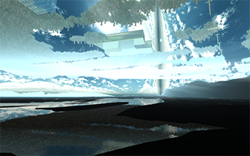
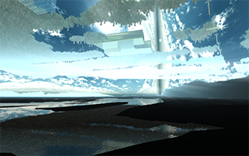
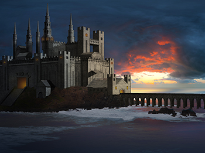
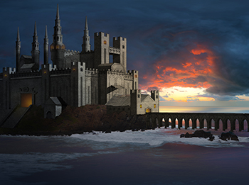

Artwork
Noumena: on the Absurd in Virtual Environments
Noumena is an collection of prints and interactive game-like software that models the experience of the Absurd. It was developed in Unity using Google Earth for textures and Maya for 3D modeling. Inspired by the work of Albert Camus, Noumena explores the ways in which home can be alienating or fundamentally unknowable to ourselves.
 



A Record of Human Error
"Human error refers to something has been done that was "not intended by the actor; not desired by a set of rules or an external observer; or that led the task or system outside its acceptable limits". In short, it is a deviation from intention, expectation or desirability. Logically, human actions can fail to achieve their goal in two different ways: the actions can go as planned, but the plan can be inadequate (leading to mistakes); or, the plan can be satisfactory, but the performance can be deficient (leading to slips and lapses).However, a mere failure is not an error if there had been no plan to accomplish something in particular." ~from Wikipedia
Scans of incorrect information composited in photoshop with errors highlighted.


Digital Paintings
Done in Photoshop or Krita with a Wacom.

 



Jackson Pollock Generator
Sure, your kid can do that. But did you know your computer can do it too? Click the 'paint it' button below and watch in awe as your computer generates a priceless work of modern art.
Paint it